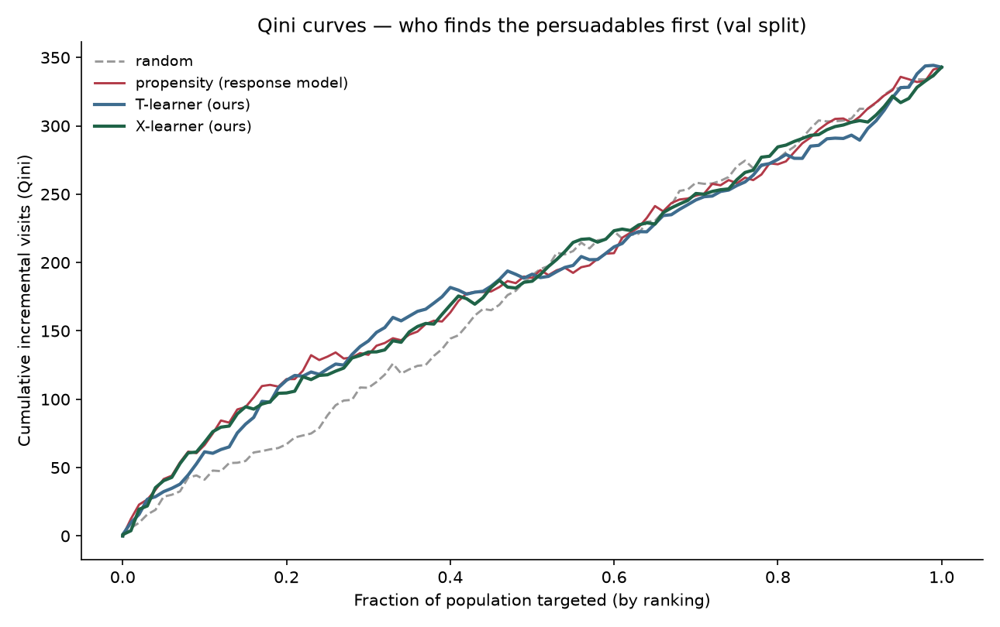
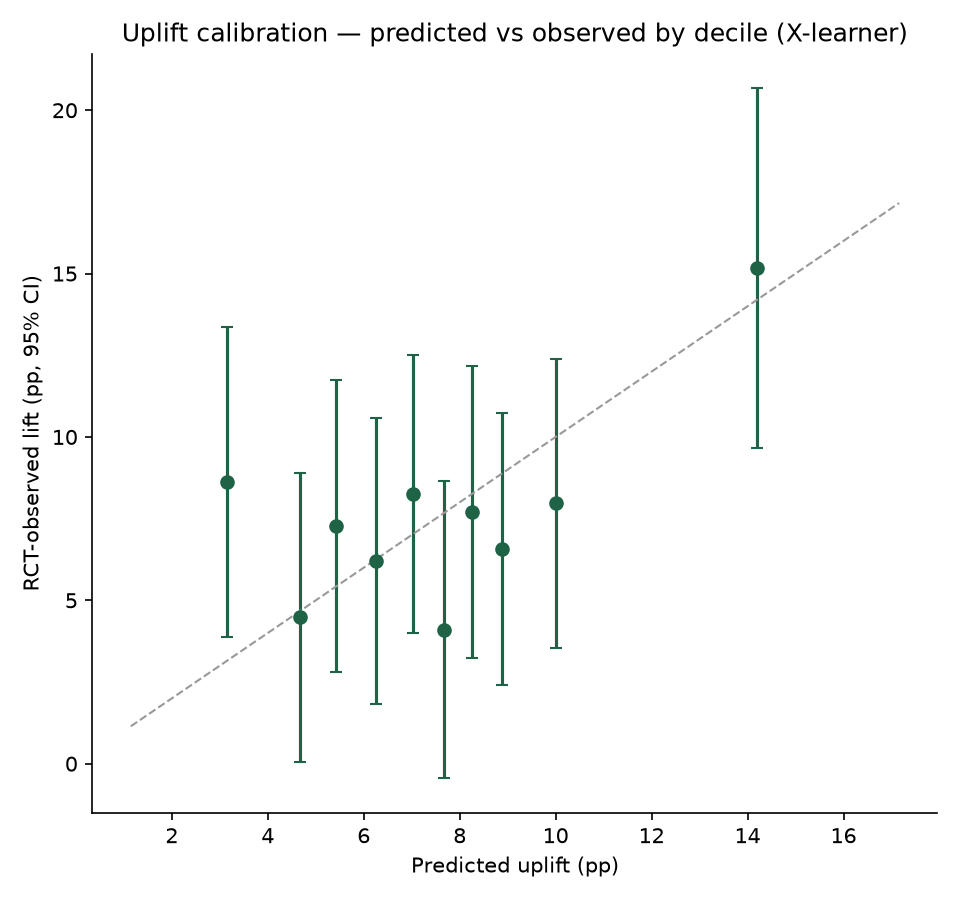
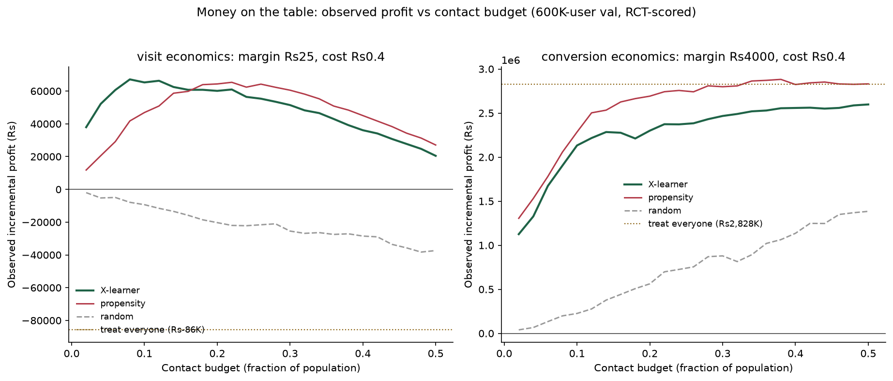
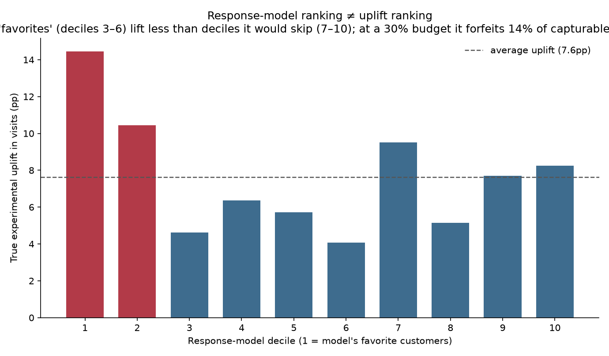

Who should we actually contact — not who will convert. Uplift models trained from scratch on 13.9M-user randomized-experiment data, turned into budget-constrained profit decisions. Everything on this page is a precomputed, RCT-validated artifact — no model runs here. Source: github.com/gtushar05/incremental
Slide the budget — watch the money move
Profit is observed, not predicted: models only choose whom to contact; money is scored by treated-vs-control outcome differences inside the chosen group — unbiased because assignment was randomized (600K-user validation slice, Criteo-UPLIFT v2).
Evidence

Qini curves — which ranking finds the persuadables first

Predicted vs RCT-observed uplift by decile

The money chart — both economics scenarios

Where a response model spends budget vs where the lift lives
Segments (validated)
segment
share
predicted τ
observed lift
Each segment's lift comes from arm differences inside the segment — labels are validated, not asserted.
Method, in four locks
Sealed holdouts: golden holdouts hashed & committed on day 1 (4b1e135a…, eabff873…) — evaluated exactly once.
Pre-registered rules: primary-label gate + sampling protocol committed before results existed; the gate kept the label where our own models lose.
Paired-delta inference: model comparisons use paired bootstrap deltas — overlapping CIs can't adjudicate. The machinery caught a real tie-ordering bug via an impossible CI.
From-scratch, verified: T/X-learners bit-identical to sklift (r = 1.000000) + a synthetic ground-truth test suite; 23 tests.
The four findings
The industry default burns money, measurably — response-model targeting forfeits 14–17% of capturable lift at 30–50% budgets.
Small data is fog — on 64K rows, uplift vs propensity is statistically undecidable (and we say so, with CIs).
At scale, uplift wins where theory predicts — the X-learner's top decile concentrates ~6× the average lift, beating propensity by a CI-separable margin; at thin margins, targeting flips the campaign from loss to profit at an 8% budget.
And loses where theory predicts — at a 0.29% base rate, effect-differencing is noise-dominated and propensity wins; with fat margins, treat-all is near-optimal anyway. Knowing the regime is the skill.